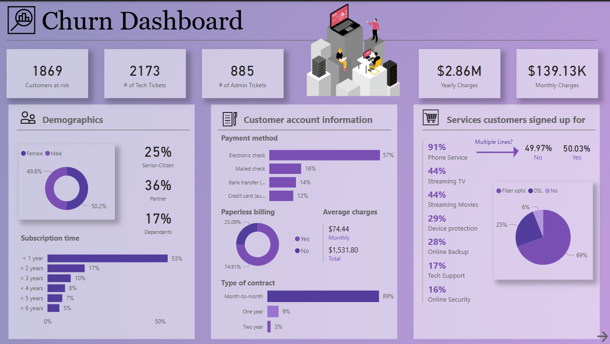
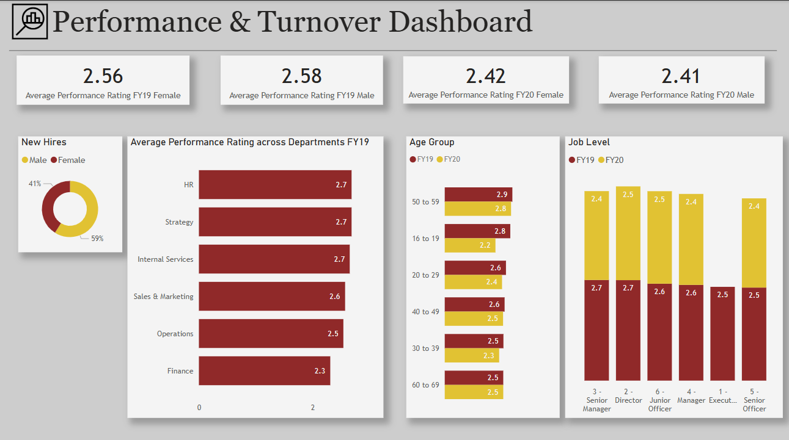
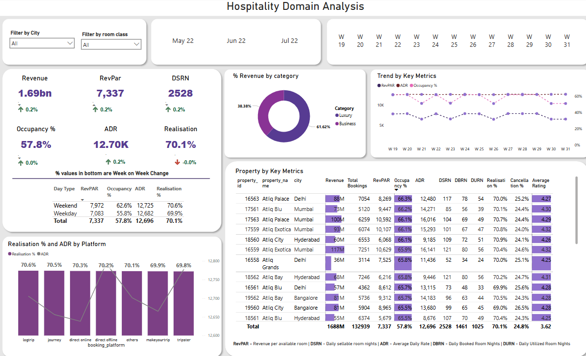
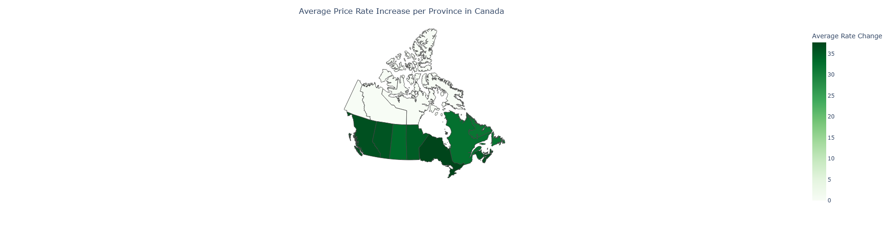
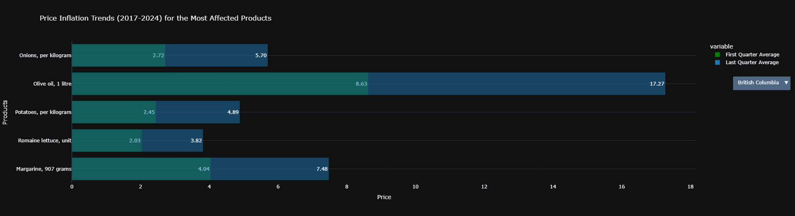

March, 2024
Customer Churn Analysis
(Power BI)

Analysis using Power BI was done on data provided by PwC for Customer Churn. Key findings include calculating the percentage of customers lost, those at risk of being lost, and targeting the right subset of customers.
March, 2024
Hiring and Performance Analysis
(Power BI)

Analysis using Power BI was conducted on data provided by PwC for its employees, including new hires diversity, performance, and promotions within FY 19-20.
February, 2024
Hospitality Domain Analysis
(Power BI)

Did you know that in the hospitality domain, Friday and Saturday are considered weekends, while the rest of the days are counted as weekdays? I learned about many new metrics used specifically in the hospitality domain. Click on the link to learn more!
February, 2024
Canadian Food Price Analysis
(Pandas & Plotly)


The rising costs of food products have been a significant concern in recent times. This project analyzes food price inflation in Canada using data from Statistics Canada, covering different provinces from 2017 to 2024. The dataset includes 110 products and their prices over this period.